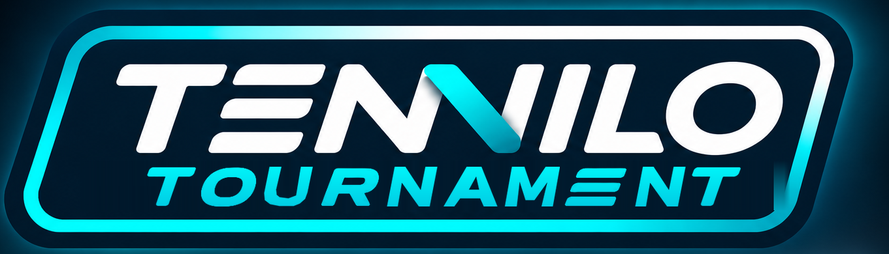
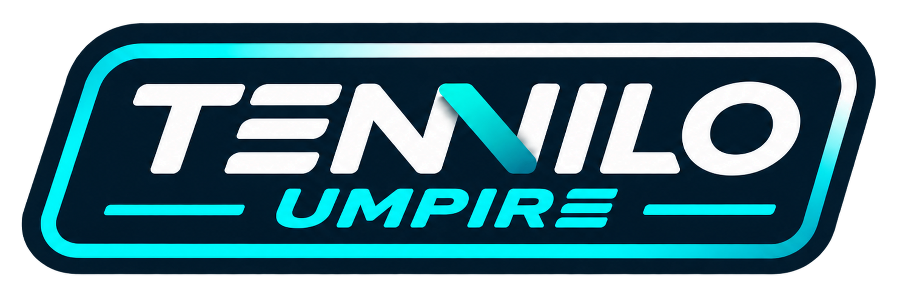

PUNKT. TIPpen. WEITER.
Große Touch-Flächen für Punkte und eine eindeutige Rückgängig-Funktion: möglichst wenig Ablenkung im Match.
DIE TENNIS-ZÄHL-APP FÜR DIE APPLE WATCH
TENNILO Score entwickelt das Zählen auf dem Tennisplatz weiter: Punkte während des Matches direkt an der Apple Watch erfassen, Spielstände im Blick behalten und sich wieder aufs Spiel konzentrieren. Das iPhone ergänzt das Konzept.
WATCH-FIRST / ZÄHLEN NEU GEDACHT
Konzipiert für den Moment zwischen zwei Ballwechseln: klar, schnell, auf das Wesentliche reduziert. Alles noch in Entwicklung – keine veröffentlichten App-Funktionen.
Große Touch-Flächen für Punkte und eine eindeutige Rückgängig-Funktion: möglichst wenig Ablenkung im Match.
Punkte, Spiele, Sätze und Tiebreaks sollen jederzeit direkt am Handgelenk lesbar bleiben.
Aufschlagwechsel, Seitenwechsel und unterschiedliche Zählweisen gehören zum Bedienkonzept.
Geplante Abläufe für wechselnde Aufschläger und Rückschläger – zusätzlich zur Einzel-Zählweise.
NÄCHSTE SCHRITTE
Aus Konzepten werden reale Matches. Die Schritte sind geplant und können sich mit der Entwicklung ändern.
Interaktive Zählabläufe für Apple Watch und iPhone weiterentwickeln.
IN ARBEITGeplanter Praxistest beim LK-Turnier in Bad Saarow. Apple Watch erforderlich. Die Teilnahme am Test wird mit der fertigen App kostenlos honoriert.
GEPLANTErkenntnisse aus den Praxistests fließen in den Weg zur marktreifen App ein.
ANGESTREBTZum Betatest: Es gibt keine festgelegte maximale Teilnehmerzahl. Voraussetzung ist eine Apple Watch. Für Teilnehmende ist die App bei Marktreife gratis. Eine separate Anmeldung über diese Website wird derzeit nicht angeboten.
TENNILO BLEIBT DIE DACHMARKE
Score ist unser Fokus. Weitere digitale Tenniswerkzeuge wachsen unter derselben Marke – mit eigenständigen Aufgaben und eigenen Produktlogos.

Turnierorganisation für Vereine und Veranstalter – mit verschiedenen Turnierformaten, Auslosungen, Spielplänen, Ergebnissen und Live-Ansichten.

Modulares Werkzeug für Tennis-Schiedsrichter: Spiele leiten, Spielstände erfassen und diese künftig an externe Anzeigetafeln übertragen.
BUILDING TENNILO
Kurze Einblicke statt großer Versprechen. Geplante Schritte bleiben als Planung gekennzeichnet.
Score im Mittelpunkt; Tournament und Umpire wachsen als weitere eigenständige Projekte unter der Dachmarke.
Ein interaktiver Prototyp dient als Grundlage für die Bedienung auf Apple Watch und iPhone – auch mit Tiebreak und Doppel.
Der erste Betatest ist für den 27. Dezember 2026 beim LK-Turnier in Bad Saarow vorgesehen.
TENNILO FOUNDERS · MITGESTALTEN
TENNILO Founders richtet sich an Menschen und Vereine, die unsere Produktfamilie früh begleiten wollen. Geplant sind Informationen zu Entwicklung, möglichen Founders-Angeboten und einem möglichen Crowdfunding.
Noch gibt es keine Buchung, keine Preise und keinen Kampagnenstart. Du kannst dich unverbindlich vormerken lassen. Die Founders-Warteliste ist keine Anmeldung für den Score-Betatest am 27. Dezember.
DEINE MEINUNG ZÄHLT
Welche Funktion fehlt dir auf der Apple Watch? Was müsste beim Zählen mitten im Match unbedingt einfach sein? Schreib uns deine Wünsche.